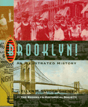

<body bgcolor="#FFFFFF" text="#000000" link="#0000FF" vlink="#CC0000" alink="#CC0000"><center><hr width="350" size="1" align="center" noshade>A colorful history of Brooklyn, its monuments, and its residents<hr width="350" size="1" align="center" noshade><p><a href="https://cdcshoppingcart.uchicago.edu/Cart/ChicagoBook.aspx?ISBN=9781566394086&&PRESS=temple" target="_top">Buy this book!</a> | <a href="https://cdcshoppingcart.uchicago.edu/Cart/Cart.aspx?PRESS=temple" target="_top">View Cart</a> | <a href="https://cdcshoppingcart.uchicago.edu/Cart/Cart.aspx?PRESS=temple" target="_top">Check Out</a></p><p></p></center><!--none//--><h1>Brooklyn!</h1>
<H2>An Illustrated History</H2>
<h3>Ellen M. Snyder-Grenier</h3>
<P>cloth 1-56639-408-2 $43.50, Jul 96, <FONT COLOR=#990033>Out of Stock Unavailable</FONT>
<br>paper 1-59213-082-8 $25.95, <FONT COLOR=#990033>Out of Stock Unavailable</FONT>
<BR> 304 pp
8x10
175&nbsp;halftones 114&nbsp;color&nbsp;illustrations
</P><h3 align="center"><P><font color="#996633">New York Society Library's New York City Book Award for Best Book,
1996</font></P>
</H3>
<BLOCKQUOTE><I>"This is the best history of my hometown I've ever read. Brooklyn is a very special place and Ellen Snyder-Grenier has captured it all. A great work!"</i>
<br>&#151<b>Larry King</b><i></I></BLOCKQUOTE>
<p>Brooklyn. The word conjures up a host of images&#151<i>The Honeymooners</i>, Ebbets Field, Walt Whitman, <i>Saturday Night Fever</i> and the West Indian Carnival. Guiding us into this historical panorama through five larger-than-life points of entry&#151including The Brooklyn Bridge, The Brooklyn Navy Yard, Coney Island, and the Brooklyn Dodgers&#151Ellen Snyder-Grenier highlights the people, events, and places that have made Brooklyn Brooklyn.
<p>Lavishly illustrated with prints, paintings, memorabilia, and objects from The Brooklyn Historical Society's unparalleled collection, <I>Brooklyn! </I>will bring every reader closer to the Brooklyn of legend and fact.
<BR>&nbsp;<h2>Excerpt</h2><P>Excerpt available at <a href="http://www.temple.edu/tempress">www.temple.edu/tempress</a></p>
<BR>&nbsp;<h2>Reviews</h2>
<p><i>"More than just a history of Brooklyn, this fascinating and comprehensive portrait of one of the most diverse urban areas in the world is a commentary on the growth of America and the immigrant vision. ...This is a commendable effort, one of those unusual hybrids that works as a history and as a gift book."</I>
<br>&#151<b><I>Publishers Weekly</I></b>, starred review
<p><i>"[The book is] valuable not only to those who are interested in pictorial images of Brooklyn but also to those who seek greater information on one of the most important urban centers in the United States."</i>
<br>&#151<b><i>The Public Historian</i></b>
<p><i>"It's been famously said that only the dead know Brooklyn, but those seeking a less extreme path to knowledge will find this exemplary book to be just what is needed. Thorough and detailed without being stuffy, it covers the borough by focusing on five of its most significant totems....Knowledgeable Brooklynites will appreciate the book's accurate references to such borough traditions as skelly (a street game) and the spaldeen (a small pink ball used in street games), while even those who have never been east of the Continental Divide will enjoy the enormous number of carefully chosen black-and-white and color illustrations."</i>
<br>&#151<b>Kenneth Turan</b>, <i>The Los Angeles Times</i>
<p><i>"This volume is a wonderful guide explaining Brooklyn's rich and colorful history, its developing neighborhoods and economic cycles. Using prints, paintings and pictures from the collection of the Brooklyn Historical Society, Snyder-Grenier lovingly melds legend and fact."</i>
<br>&#151<b>Patrick H. Samway</b>, <i>America</i>
<p><I>"From the Puerto Rican diaspora of the early 1900s to the migration of African Americans from the tormented South, to the massive immigration of Eastern Europeans, </I>Brooklyn! An Illustrated History<I> is an intriguing and comprehensive depiction of the patchwork metropolis we affectionately call 'Brooklyn.'"</I>
<br>&#151<b>Congresswoman Nydia M. Vel�zquez</b>, 12th District, New York
<p><I>"To have played a small role in the history of the wonderful borough of Brooklyn makes me very proud. This book increases that pride greatly."</I>
<br>&#151<b>Clem Labine</b>, former Brooklyn Dodger
<p><I>"This book is about the real Brooklyn and all the values that are in that culture where I played baseball and where I raised my kids."</I>
<br>&#151<b>Carl Erskine</b>, former Brooklyn Dodger
<p><I>"Ellen Snyder-Grenier deserves our gratitude for bringing to a larger audience so many of the treasures of The Brooklyn Historical Society and for preserving for posterity the imaginative and popular exhibition that adorned its walls in the last years of the twentieth century. But she has done even more, giving us nothing less than an interpretation of all of Brooklyn's long and eventful history. Her readers are in for a treat."</I>
<br>&#151<b>Kenneth T. Jackson</b>, Barzun Professor of History and the Social Sciences, Columbia University, editor of <I>The Encyclopedia of New York City</I>
<p><i>"Snyder-Grenier has accomplished a difficult feat. She has written an excellent book, useful to a general audience as well as both public and academic historians. This book is well researched and accessible.... a good popular social history, exposing both Brooklyn's triumphs and tragedies."</i>
<br>&#151<b><i>The Public Historian</i></b>
<BR>&nbsp;<h2>Contents</h2><P>
<p>Foreword &#150 Charles J. Hamm
<br>Acknowledgments &#150 David M. Kahn
<br>Introduction
<p>1. Brooklynites, Real and Imagined: Portraits of People
<br>Real people, in interviews and in writings long hidden in archives, bear witness to the variety of life experiences, cultures, and traditions that successive waves of newcomers brought and still bring to the community's life.
<p>2. The Brooklyn Bridge: Growth and the Price of Progress
<br>A marvel of engineering, its story is also one about the grand visions, daring, and skill that brought about the borough's explosive growth of businesses and population and created its cosmopolitan character.
<p>3. The Brooklyn Navy Yard: A Mirror for Brooklyn's Industrial Rise
<br>This monumental example of industrial might set astonishing productivity records in World War II but tragically closed a generation later; the industries that formed Brooklyn's economic backbone followed a similar pattern of decline.
<p>4. Coney Island: A City at Play
<br>The world-famous complex of spectacular amusement parks is only one stop in an engaging exploration of the places&#151from the magnificent vistas of Prospect Park to downtown theaters where vaudeville, movies, and then rock and roll shows played&#151that still attract pleasure seekers from virtually everywhere.
<p>5. The Brooklyn Dodgers: Dem Wonderful Bums
<br>According to some people, they will always be associated with Brooklyn, the home of organized baseball. From their nineteenth-century roots, follow them through the dark years (when they were known as the "Bums"), the Golden Era under Larry MacPhail, Jackie Robinson's turbulent times, the World Series triumph in 1955, and the devastating relocation.
<p>Epilogue: Wait 'til Next Year
<br>Bibliographical Essay
<br>Suggested Reading
<br>Timeline
<br>Index
</P><BR>&nbsp;<H2>About the Author(s)</H2>
<P>Formerly Chief Curator at the Brooklyn Historical Society, <b>Ellen M. Snyder-Grenier</b> is Director of Special Projects at the New Jersey Historical Society.</P>
<BR><H2>Subject Categories</H2>
<p><A HREF="/tempress/general.html" TARGET="_top">General Interest</a>
<BR><A HREF="/tempress/urban.html" TARGET="_top">Urban Studies</a>
</p>
<BR><h2 class="inpageheading">In the series</H2>
<P><I><a href="http://www.temple.edu/tempress/critical.html" onMouseOver="window.status='Click for other books in this series!'; return true;" onMouseOut="window.status=''; return true;" target="_top">Critical Perspectives on the Past</a></i>, edited by <a href="http://www.temple.edu/tempress/authors/benson_memoriam.html" target="_top">Susan Porter Benson</a>, Stephen Brier, and Roy Rosenzweig.
</p><p><i>Critical Perspectives on the Past</i>, edited by Susan Porter Benson, Stephen Brier, and Roy Rosenzweig, is concerned with the traditional and nontraditional ways in which historical ideas are formed. In its attentiveness to issues of race, class, and gender and to the role of human agency in shaping events, the series is as critical of traditional historical method as content. Emphasizing that history is itself an interpretation of material events, the series demonstrates that the historian's choices of subject, narrative technique, and documentation are politically as well as intellectually constructed.</p>
<p align="center"><a href="https://cdcshoppingcart.uchicago.edu/Cart/ChicagoBook.aspx?ISBN=9781566394086&&PRESS=temple" target="_top">Buy this book!</a> | <a href="https://cdcshoppingcart.uchicago.edu/Cart/Cart.aspx?PRESS=temple" target="_top">View Cart</a> | <a href="https://cdcshoppingcart.uchicago.edu/Cart/Cart.aspx?PRESS=temple" target="_top">Check Out</a></p><p><font face="Arial" size="1"><a href="copyright.html" onMouseOver="window.status='Web Copyright Policy';return true;" onMouseOut="window.status=''" title="Web Copyright Policy">&copy;</a> 2015 <a href="http://www.temple.edu" target="new" onMouseOver="window.status='Link to Temple University home page';return true;" onMouseOut="window.status=''" title="Link to Temple University home page">Temple University</a>. All Rights Reserved. http://www.temple.edu/tempress/titles/1197_reg.html</font></p>